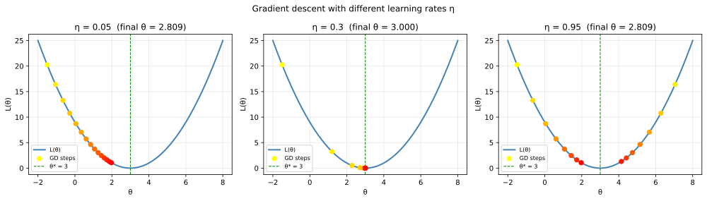

Machine Learning from Scratch: a Physicist's Road to Generative Models III
Section 3: Neural Networks: Learning to Draw Curves
The wall we hit in Section 2
By the end of section 2 we had a working classifier, logistic regression takes a feature vector, computes a linear combination \( z = \boldsymbol{\theta}^\top \mathbf{x} \), feeds it through a sigmoid, and outputs a probability. Training minimises the cross-entropy loss using gradient descent, the same algorithm from section 1, now with a different output and a different loss.
But there is a silent assumption buried in the model that we never made explicit: the decision boundary is a straight line. In two dimensions it is a line, in three dimensions it is a plane, in \(D\) dimensions it is a hyperplane. The model is geometrically committed to partitioning feature space with a single flat cut, no matter how much data you give it or how long you train it. That is not a limitation of the training procedure, it is a limitation of the model's mathematical form.
For many real physics problems, this simply is not good enough. A GW signal does not occupy one side of a line in (SNR, chirp-mass) space: it occupies an island, a roughly elliptical region surrounded by noise triggers on all sides. Cosmic-ray muon events from a certain decay channel form a ring in (energy, angle) space, not a half-plane. Photometric redshift depends on all five or six photometric bands simultaneously in a highly non-linear way, no single linear combination of colours gives you a clean prediction. In all of these cases, logistic regression is structurally unable to fit the data well, no matter how it tunes its weights. We need a model that can draw curves.
That model is the neural network. The key idea turns out to be almost comically simple: take the logistic regression unit, copy it many times, stack the copies in layers, and connect them. Nothing else about the training procedure changes.
The building block: one neuron
Before stacking anything, let us understand a single neuron completely. A neuron (see Figure 1) takes a vector of inputs \( \mathbf{x} = (x_1, x_2, \dots, x_D) \), computes a weighted sum, adds a bias, and passes the result through an activation function:
\[ z = w_1x_1 + w_2x_2 + \dots + w_Dx_D + b = \mathbf{w}^\top \mathbf{x} + b \]
\[ a = \phi(z) \]
Here \( \mathbf{w} \) is the weight vector, \( b \) is the bias, and \( \phi \) is an activation function. The weights and bias are the learnable parameters of this neuron. The activation function is a fixed, non-linear function chosen by the designer, we will discuss the choices in a moment.
If this looks exactly like logistic regression with a sigmoid activation function, that is because a single neuron is logistic regression. The neuron is the atomic unit. What makes neural networks powerful is not the neuron itself but the way neurons are composed.
Notice the biological metaphor embedded in the terminology. The weights \( \mathbf{w} \) represent the strength of connections from other neurons (or inputs) to this one. The bias \( b \) controls how easy it is to activate the neuron, a large negative bias means the neuron fires only when the input is strongly positive. The activation function \( \phi \) determines how the neuron responds to its total input. This is a loose analogy to biology, but it is useful for building intuition. The mathematics that matters is simply a weighted sum followed by a non-linear function.

*Figure 1: A single neuron computes a weighted sum of its inputs plus a bias, \( z = \mathbf{w}^\top \mathbf{x} + b \), then passes the result through a non-linear activation function \( \phi \) to produce its output \( a = \phi(z) \). Stacking many such neurons in layers is all a neural network is.*
From one neuron to a network: the forward pass
A neural network is built by arranging neurons into layers. Every neuron in one layer receives its input from every neuron in the previous layer, and sends its output to every neuron in the next layer. The first layer receives the raw input features; the last layer produces the final prediction; everything in between is called a hidden layer. Let us trace the computation for a small network with two hidden layers.
Layer 1 receives the input \(\mathbf{x}\) and produces a vector of activations:
\[\mathbf{a}_1 = \phi(\mathbf{W}_1 \mathbf{x} + \mathbf{b}_1)\]
Here \(\mathbf{W}_1\) is a matrix of weights, one row per neuron in the layer, and \(\mathbf{b}_1\) is a bias vector. The activation \(\phi\) is applied element-wise to every entry of \(\mathbf{W}_1 \mathbf{x} + \mathbf{b}_1\).
Layer 2 takes the output of layer 1 as its input:
\[\mathbf{a}_2 = \phi(\mathbf{W}_2 \mathbf{a}_1 + \mathbf{b}_2)\]
Output layer takes the output of layer 2 and produces the final prediction. For binary classification it uses a sigmoid activation function:
\[z = \sigma(\mathbf{w}_3^\top \mathbf{a}_2 + b_3)\]
*Figure 2: A forward pass through a two-hidden-layer network. Drag the sliders to change the input event; use Next → to walk layer by layer. Purple edges carry positive weights, red carry negative. The output neuron turns green above \(p = 0.5\).*
This sequential computation, input enters on the left, activations propagate right, prediction exits on the right, is called the forward pass. Nothing is computed in loops or with memory; it is a single left-to-right sweep through the function composition. Every parameter in every \(\mathbf{W}_l\) and \(\mathbf{b}_l\) is a knob that training will adjust. The total number of parameters is the sum over all layers of (number of inputs) \(\times\) (number of neurons) + (number of neurons). For our toy network with architecture \(2 \to 32 \to 32 \to 1\), this works out as:
\[2 \times 32 + 32 \;\; + \;\; 32 \times 32 + 32 \;\; + \;\; 32 \times 1 + 1 = 1,121 \text{ parameters}\]
All 1,121 of these are updated simultaneously during training. As an example, GPT-4 has roughly one trillion parameters the same principle, vastly more scale.
Why non-linearity is essential
If you removed the activation functions and set \(\phi(z) = z\) everywhere, the entire network would collapse to a single linear transformation, no matter how many layers you stacked. Layer 2 would compute \(\mathbf{W}_2 (\mathbf{W}_1 \mathbf{x} + \mathbf{b}_1) + \mathbf{b}_2 = (\mathbf{W}_2 \mathbf{W}_1) \mathbf{x} + (\mathbf{W}_2 \mathbf{b}_1 + \mathbf{b}_2)\), which is just another linear function with a combined weight matrix \(\mathbf{W}_2 \mathbf{W}_1\). Depth without non-linearity buys you nothing.
The activation function breaks this degeneracy. By applying a non-linear transformation at every neuron, the network gains the ability to represent curved boundaries, local clusters, multiple modes, structures that no linear function can capture. The 1989 Universal Approximation Theorem formalises this: a neural network with a single hidden layer and a non-linear activation can approximate any continuous function on a compact domain to arbitrary precision, given enough neurons. Depth (many layers) turns out to be more parameter-efficient than width (many neurons in one layer) for many practical problems, which is why modern architectures tend to be deep rather than wide.
The choice of activation: ReLU vs sigmoid
Two activation functions dominate in practice and it is worth understanding both.
The sigmoid \(\sigma(z) = 1/(1 + e^{-z})\) maps any real number to \((0, 1)\). We have used it extensively for the output layer of a classifier because it produces a valid probability. The problem with sigmoid in hidden layers is that its gradient nearly vanishes for large \(|z|\): \(\sigma'(z) \approx 0\) when \(|z|\) is large. During backpropagation, these near-zero gradients are multiplied together across layers, and the product decays exponentially. The parameters in early layers receive essentially no gradient signal — they stop learning. This is called the vanishing gradient problem and it plagued deep networks throughout the 1990s and 2000s.
The Rectified Linear Unit (ReLU), \(\phi(z) = \max(0, z)\), solves this with remarkable simplicity. Its gradient is exactly 1 for \(z > 0\) and 0 for \(z < 0\). There is no decay across layers: a gradient that passes through a ReLU neuron either survives intact (if the neuron was active) or is blocked entirely (if it was not). In practice, ReLU networks train faster, converge more reliably, and reach lower loss values than sigmoid networks of the same size. This is why ReLU has been the default choice for hidden layers since around 2012.
The practical rule: use ReLU in hidden layers, sigmoid (or softmax for multi-class) in the output layer.
How the network learns: gradient descent and backpropagation
The loss function for our neural network classifier is still cross-entropy, exactly as in section 2. What changes is that the loss is now a function of thousands of parameters spread across multiple layers, rather than just a slope and an intercept. We can no longer solve for the minimum analytically — instead we use gradient descent.
Gradient descent: the ball on the hill
The gradient \(\nabla_{\theta} L\) is a vector that points in the direction of *steepest increase* of the loss. Taking a step in the opposite direction, the direction of steepest decrease, is gradient descent. In one dimension, this update rule is:
\[\theta \leftarrow \theta - \eta \cdot \frac{\partial L}{\partial \theta}\]
where \(\eta\) is the learning rate, a small positive number controlling the step size. In the multi-parameter case, exactly the same formula applies to every parameter simultaneously, with partial derivatives replacing the ordinary derivative.
The figure below shows gradient descent on the simplest possible loss function, \(L(\theta) = (\theta - 3)^2\), for three different learning rates. The coloured dots are successive positions of the parameter as training proceeds.

*Figure 3: Gradient descent on \( L(\theta) = (\theta - 3)^2 \) for three learning rates \( \eta \). Left: \( \eta = 0.05 \): the ball rolls slowly and takes many steps to converge. Middle: \( \eta = 0.30 \): clean convergence in roughly ten steps. Right: \( \eta = 0.95 \): the step is too large, the parameter overshoots the minimum on every iteration and oscillates. The learning rate is not a free lunch: too small wastes computation, too large causes divergence.*
The learning rate is one of the most important hyperparameters in deep learning, a parameter about the training process rather than about the model. In practice, adaptive optimisers like Adam (which we use in section 6) adjust the learning rate automatically for each parameter based on the history of its gradients, which makes training much less sensitive to the initial choice of \( \eta \).
Backpropagation: gradient descent made efficient
For a network with 1,121 parameters, naively computing each partial derivative \(\partial L / \partial \theta_k\) by perturbing one parameter at a time would require 1,121 forward passes per update step. Backpropagation reduces this to a single forward pass followed by a single backward pass, a computational cost of the same order as two forward passes, regardless of the number of parameters.
The key insight is the chain rule of calculus. The loss is a composition of functions: \(L = L(\mathbf{a}_3(\mathbf{a}_2(\mathbf{a}_1(\mathbf{x}))))\). The chain rule tells us how to differentiate a composition:
\[\frac{\partial L}{\partial \mathbf{W}_1} = \frac{\partial L}{\partial \mathbf{a}_3} \cdot \frac{\partial \mathbf{a}_3}{\partial \mathbf{a}_2} \cdot \frac{\partial \mathbf{a}_2}{\partial \mathbf{a}_1} \cdot \frac{\partial \mathbf{a}_1}{\partial \mathbf{W}_1}\]
Backpropagation computes this product efficiently by starting from the output layer and working backwards, reusing
intermediate results at each step. The name refers to the direction of this computation: gradients
propagate backwards through the network from the loss to the inputs. Frameworks like
implement this automatically, you write the forward pass and the framework computes the backward pass for you.
You never write gradient formulas by hand.
A good mental model: the forward pass asks "what is the prediction?"; the backward pass asks "how should each parameter change to make the prediction better?" Together they define one training step, and repeating this thousands or millions of times is training.
The failure mode of the linear model
The figure below makes the limitation of logistic regression concrete. The dataset for this step contains GW-inspired triggers whose "signal" population forms two elliptical islands in \((\text{SNR}, \text{chirp-mass})\) space, a rough model of two distinct compact binary populations, rather than the single blob of section 2.
![Left: logistic regression draws a single straight boundary and achieves modest AUC. The signal islands are on the wrong side of the line in some regions, and the model cannot fix this regardless of training duration, the constraint is architectural. Middle: a two-hidden-layer network with 32 neurons per layer learns a curved boundary that wraps around both islands, achieving substantially higher AUC. Right: the training loss curve for the neural network, a fast initial drop as the network learns the broad structure, followed by a plateau as it refines the boundary details.](./assets/images/step3_neural_network.svg)
*Figure 4: Left: logistic regression draws a single straight boundary and achieves modest AUC. The signal islands are on the wrong side of the line in some regions, and the model cannot fix this regardless of training duration, the constraint is architectural. Middle: a two-hidden-layer network with 32 neurons per layer learns a curved boundary that wraps around both islands, achieving substantially higher AUC. Right: the training loss curve for the neural network, a fast initial drop as the network learns the broad structure, followed by a plateau as it refines the boundary details.*
The contrast between the left and middle panels is the whole argument for neural networks in one image. The logistic regression boundary is a line that cannot possibly separate two islands from their surrounding noise. The neural network boundary bends, curves, and finds the right shape because the composition of non-linear layers gives it the expressive power to represent any smooth boundary. The right panel shows the training loss decreasing over epochs, gradient descent rolling downhill on the cross-entropy surface, exactly as in section 2, just in a much higher-dimensional parameter space.
What a neural network actually learns
There is a useful perspective from representation learning that is worth carrying through the rest of this series. Each hidden layer of a neural network can be understood as computing a representation, a transformed version of the input that makes the classification task easier for the next layer.
The first hidden layer receives the raw features (SNR, chirp mass) and applies its weight matrix and ReLU activation. The output of that layer is a new set of numbers that can be thought of as learned features, nonlinear combinations of the originals that the network found useful. The second hidden layer takes those learned features and computes another set of even more abstract features. The output layer then performs logistic regression in this learned feature space, which, by design, is much more linearly separable than the original space.
This is why neural networks with many layers are called "deep": the word refers to the depth of the representation hierarchy, not the number of parameters. And it is why deep learning has proved so useful in physics: it can discover the relevant combinations of raw detector signals automatically, without a physicist having to hand-design the feature set. In a Cherenkov telescope array, the network might learn to combine pixel intensities in ways that approximate the shower image parameters (length, width, orientation) that physicists spent years deriving by hand. It does not always do better, but it often does, and it does it without domain knowledge.
Counting parameters: making the abstraction concrete
For the network in this step (architecture \(2 \to 32 \to 32 \to 1\), with ReLU hidden activations and sigmoid output), the parameter count breaks down as follows.
| Layer | Weights | Biases | Total |
|---|---|---|---|
| Input \(\to\) Hidden 1 | \(2 \times 32 = 64\) | \(32\) | \(96\) |
| Hidden 1 \(\to\) Hidden 2 | \(32 \times 32 = 1024\) | \(32\) | \(1056\) |
| Hidden 2 \(\to\) Output | \(32 \times 1 = 32\) | \(1\) | \(33\) |
| Total | \(1,121\) |
All 1,121 parameters are updated by gradient descent on every training step. The comparison with GPT-4's one trillion parameters is not meant to be humbling — it is meant to make the point that the principle scales. The same forward pass, the same cross-entropy loss, the same gradient descent update rule, the same backpropagation algorithm: from 1,121 parameters to \(10^{12}\), the recipe does not change. What changes is the architecture, the scale of the compute, and the volume of training data.
What the code does
The hands-on material for this section is in a dedicated Jupyter notebook in the accompanying GitHub repository ↗. Each section of this series has its own notebook, so you can work through them independently and at your own pace without wading through unrelated code 😇.
The accompanying tutorial notebook ↗ is structured in six parts. Part A isolates gradient descent completely from neural networks, it runs on the one-parameter loss \( L(\theta) = (\theta - 3)^2 \) and produces Figure 3 above, which you should study before anything else. Watching a single number converge (or diverge) under gradient descent builds the intuition for everything that follows.
Part B generates the two-island dataset, and Part C trains both the logistic regression and the neural network, printing their AUC scores side by side. The AUC gap between the two models is the empirical demonstration of what the figure shows geometrically. Part D explains the ReLU vs sigmoid trade-off in the printed output. Part E produces Figure 2. Part F prints the parameter count table, which you should verify by hand for a small example, computing \( 2 \times 32 + 32 \) by hand and confirming the script's output is a good sanity check that you understand what the weight matrix represents.
The running scorecard
| Regression | Classification | Neural network | |
|---|---|---|---|
| Model | \(\hat{y} = \boldsymbol{\theta}^\top \mathbf{x}\) | \(p = \sigma(\boldsymbol{\theta}^\top \mathbf{x})\) | \(p = \sigma(\mathbf{W}_L \dots \phi(\mathbf{W}_1 \mathbf{x}))\) |
| Boundary | None (continuous output) | Hyperplane | Arbitrary curved surface |
| Loss | MSE | Cross-entropy | Cross-entropy |
| Optimiser | Closed form | Gradient descent | Gradient descent |
| Hidden activations | — | — | ReLU |
The only new ingredients in this row are the composition of layers and the non-linear activations. The loss, the optimiser, and the training loop are unchanged.
What comes next
The neural network in this step has more expressive power than logistic regression, and that power comes with a cost we have not yet discussed: a model that is expressive enough to fit complex signal-background boundaries is also expressive enough to memorise irrelevant noise in the training data, and then perform poorly on data it has not seen. This is overfitting, and it is the central practical challenge in applying neural networks to real physics data.
The next article addresses this directly, it introduces the train/validation/test split, explains why it mirrors the concept of a held-out test dataset in a physics analysis, and shows three practical cures: L2 regularisation (the Machine Learning name for Tikhonov regularisation, which you may already know from inverse problems), early stopping, and model size reduction. The tools are familiar; the application to neural networks is new.